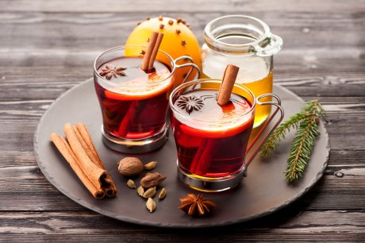

shutterstock.com/Rabusta /Редакция Ogorod.ru
Хотя глинтвейн часто ассоциируют с рождественскими праздниками, он будет как нельзя кстати в зябкую и дождливую осеннюю погоду с ее сыростью и ветром. Ведь возвращаясь домой с прогулки или работы, так хочется быстро согреться!
Само название напитка в буквальном переводе на русский язык означает "горячее вино" – поэтому чаще всего его готовят именно на основе вина (обычно красного, реже – белого). А за большое количество добавленных специй глинтвейн даже в шутку именуют "осенним супом". Впрочем, иногда этот "суп" бывает и безалкогольным.
Рецептов приготовления горячего вина – огромное множество. И в каждый можно добавить свою "изюминку", нисколько не испортив, а наоборот, подчеркнув оригинальный вкус напитка. Помимо вина и классических специй (корицы, гвоздики, кардамона, бадьяна, мускатного ореха и имбиря), в глинтвейн также иногда добавляют перец горошком, сухофрукты, свежие ягоды и фрукты. Некоторые рецепты предполагают использование различных ликеров, соков и даже крепкого алкоголя.
Для приготовления глинтвейна подойдет красное или белое сухое вино, в которое для сладости можно положить сахар или мед. Варить вино следует на медленном огне, помешивая, и ни в коем случае не кипятить, иначе оно потеряет свой особенный "букет" ароматов. Готовый напиток можно настоять около получаса, чтобы вино полностью вобрало в себя ароматы специй. После этого сразу разливайте его в стаканы или кружки и подавайте!
Специи лучше добавлять в глинтвейн не размолотыми, чтобы их можно было легко удалить из готового напитка.
Глинтвейн с вишневой настойкой
Фото с сайта shutterstock.com/Alena A
Вам понадобятся: 750 мл красного полусухого вина, 150 мл вишневой настойки, 2 ст.л. меда, лимонная кожура, корица, гвоздика, имбирь и кардамон по вкусу, ягоды вишни для украшения.
Приготовление. Вино вылейте в термостойкую металлическую емкость (можно – в эмалированную кастрюлю) и поставьте на медленный огонь.
Добавьте все специи и хорошо перемешайте. Разогрейте смесь примерно до 45-50°С. Влейте настойку и перемешайте.
Продолжите разогревать массу при помешивании, пока она не достигнет температуры примерно 70-80°С. После этого процедите напиток и разлейте его в высокие бокалы с удобной ручкой или другую подходящую посуду для подачи к столу. Подавайте глинтвейн горячим, украсив ягодами вишни.
Классический рецепт глинтвейна
Фото с сайта shutterstock.com/Vitalii Voznyi
Вам понадобятся: 1,5 л красного сухого вина, 1/2 стакана сахара, 1/4 стакана коньяка (или бренди), 2 палочки корицы, 2 звездочки бадьяна, 1 ломтик апельсина, тертый корень галангала или имбиря по вкусу.
Приготовление. В кастрюлю влейте все вино, всыпьте сахар и нагрейте. Затем положите специи, ломтик апельсина, доведите до кипения и снимите кастрюлю с огня. Дайте напитку настояться полчаса.
Пряный глинтвейн с коньяком
Фото с сайта shutterstock.com/Adria Black
Вам понадобятся: 1 л красного сухого вина, 1/4 стакана коньяка (или бренди), 1/2 стакана сахара, 1 апельсин, 1 палочка корицы, 2 коробочки кардамона, 6 звездочек гвоздики, 6 горошин душистого перца, 6 горошин черного перца.
Приготовление. С апельсина снимите цедру и выдавите сок, поместите в кастрюлю, добавьте остальные ингредиенты и варите напиток на среднем огне, помешивая, пока сахар не растворится. Затем увеличьте температуру и доведите до кипения. Снимите с огня, дайте настояться и подавайте.
Глинтвейн с яблочным сидром
Фото с сайта shutterstock.com/Adria Black
Вам понадобятся: 1 л красного сухого вина, 4 стакана яблочного сидра, 1/4 стакана меда, 1 апельсин, 2 палочки корицы, 3 звездочки аниса, 4 бутона гвоздики.
Приготовление. Все ингредиенты сложите в кастрюлю и поставьте на средний огонь. Поварите 10 минут, затем снимите с огня и разлейте по стаканам. Украсьте долькой апельсина или яблока и подавайте.
Глинтвейн с гранатовым соком
Фото с сайта shutterstock.com/Vladislav Chusov
Вам понадобятся: 1,5 л красного сухого вина, 1,5 стакана гранатового сока, 1 ломтик апельсина, 2 палочки корицы, 2 бутона гвоздики, ломтик свежего корня имбиря и сахар по вкусу, ягоды для украшения.
Приготовление. Вино смешайте с соком, всыпьте сахар и поварите, помешивая, пока сахар не растворится. Положите имбирь, корицу, гвоздику и ломтик апельсина. При необходимости добавьте еще немного сахара. Доведите напиток до кипения, снимите с огня и подавайте к столу, украсив ягодами.
Глинтвейн на белом вине
Фото с сайта shutterstock.com/Vitalii Voznyi
Вам понадобятся: 1,5 л белого сухого вина, 1/2 стакана меда, 1 ломтик яблока, 3 корочки лимонной цедры, 2 палочки корицы, 2 бутона гвоздики.
Приготовление. Положите мед в вино, немного подогрейте. Добавьте лимонную цедру, палочки корицы, гвоздику и ломтик яблока. Помешивая, доведите до кипения, снимите с огня, дайте немного постоять и подавайте.
Безалкогольный глинтвейн

Фото с сайта depositphotos.com/Marina Shanti
Вам понадобятся: 400 мл яблочного сока, 300 мл гранатового сока, 300 мл клюквенного сока, 1 палочка корицы, 3 бутона гвоздики, звездочки бадьяна и дольки апельсина для украшения.
Приготовление. Все ингредиенты налейте в кастрюлю и варите на медленном огне примерно 10 минут. Затем снимите кастрюлю с огня, дайте немного постоять, процедите напиток и удалите специи. Подавайте горячим, украсив дольками апельсина и звездочками бадьяна!
Кстати, глинтвейн – далеко не единственный напиток, который согреет вас этой осенью.